The Flower Market Adventure
斗南花市大冒险 · 分级阅读绘本（词汇量 ≈500）

小读者：
阅读日期：
封面图片：斗南花市夜景大门（来源：知乎）
The Flower Market Adventure · 第 1 页
斗南花市大冒险 · 分级阅读绘本（词汇量 ≈500）
封面图片：斗南花市夜景大门（来源：知乎）
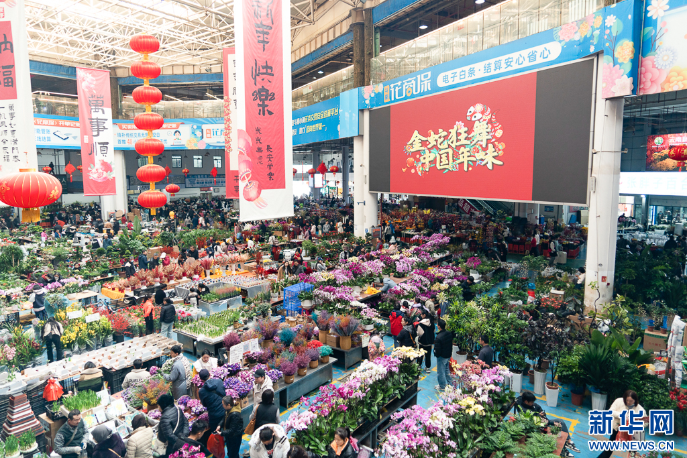
This is Dounan.
It is a big flower market.
这是斗南。它是一个大大的鲜花市场。（生词：flower 花 · market 市场）
图片：斗南花市热闹景象（来源：新华网）
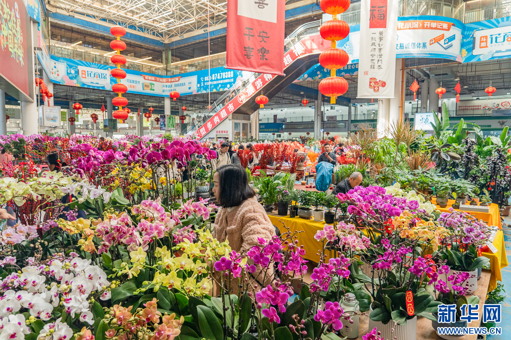
Wow! So many flowers!
Red, yellow, pink and blue.
哇！好多花！红的、黄的、粉的、蓝的。（复习：flower）
图片：斗南花市（来源：新华网）
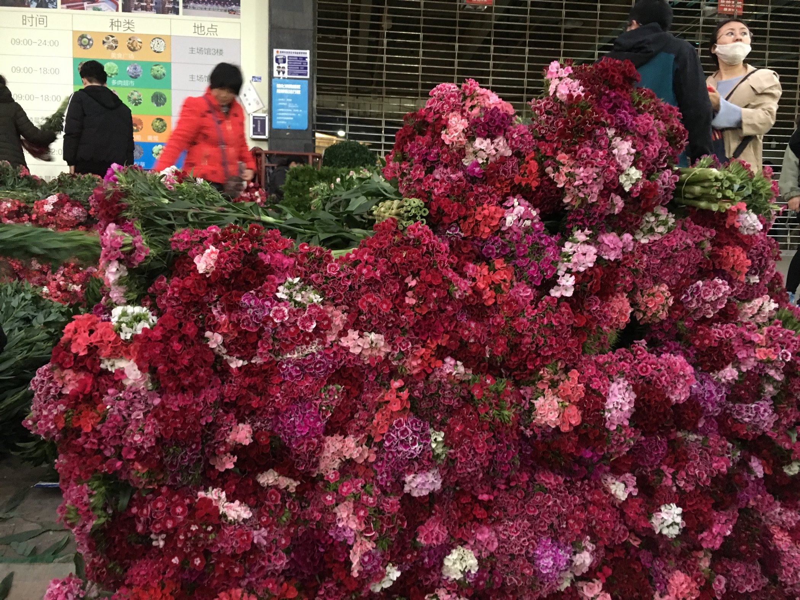
Look at the roses.
How much is it?
"Ten yuan!" says the man.
看这些玫瑰。多少钱？"十元！"叔叔说。（生词：rose 玫瑰 · yuan 元）
图片：斗南花市鲜花摊位（来源：去哪儿攻略）
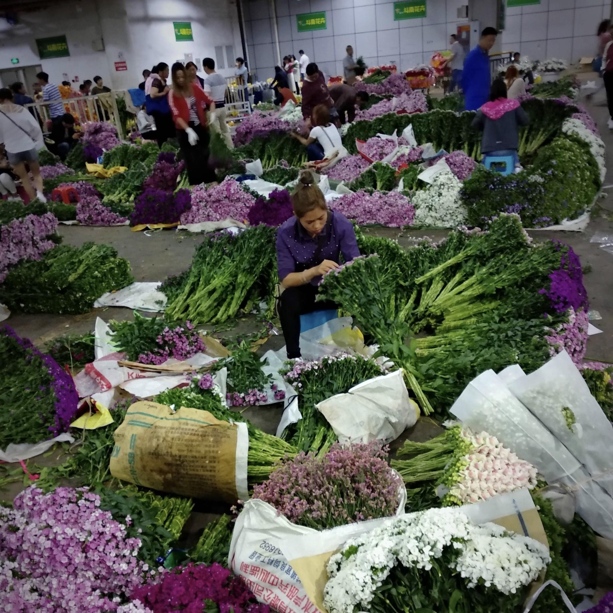
Look at the sunflower.
It is big and yellow.
"Five yuan!" he says.
看那朵向日葵，又大又黄。"五元！"他说。（生词：sunflower 向日葵）
图片：斗南花市花海（来源：新浪）
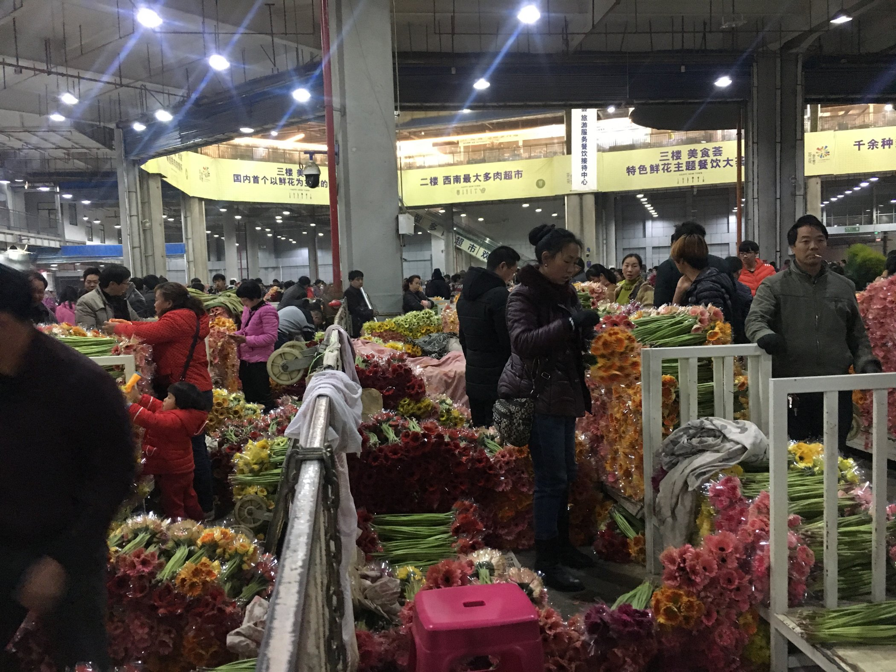
I see a lily.
I see a carnation.
The carnation is for Mom.
我看到一朵百合，一朵康乃馨。康乃馨是给妈妈的。（生词：lily 百合 · carnation 康乃馨）
图片：斗南花市摊位（来源：去哪儿攻略）
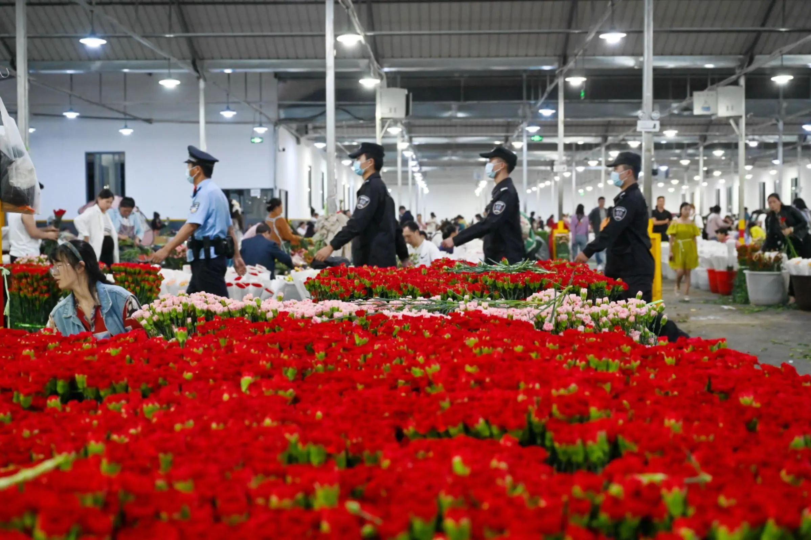
"How much is it?" I ask.
"Eight yuan."
So cheap!
"多少钱？"我问。"八元。"真便宜！（生词：cheap 便宜的）
图片：斗南花市夜场（来源：关注森林网）
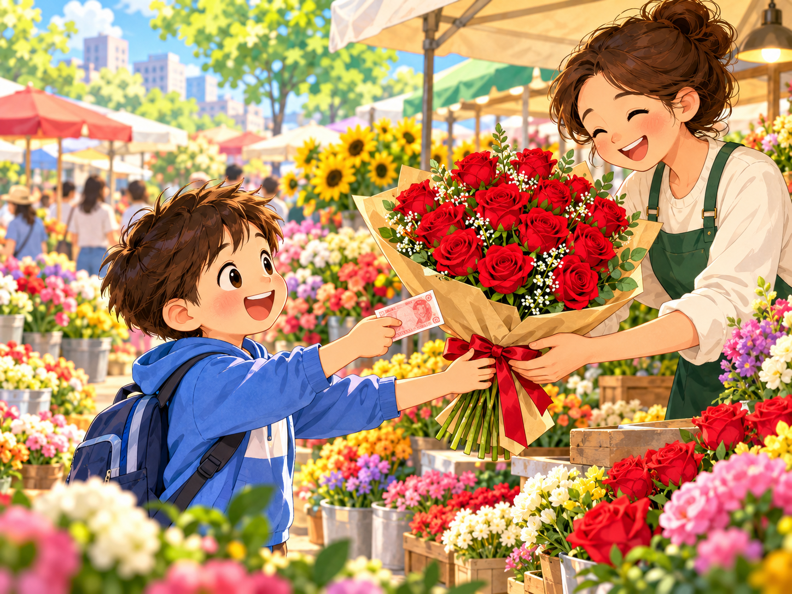
In my city, one rose is ten yuan.
Here, ten yuan buys many roses!
在我住的城市，一枝玫瑰要十元。在这里，十元能买好多玫瑰！（生词：buy 买）
同样的钱，在产地斗南能买到更多花——这叫"购买力"。
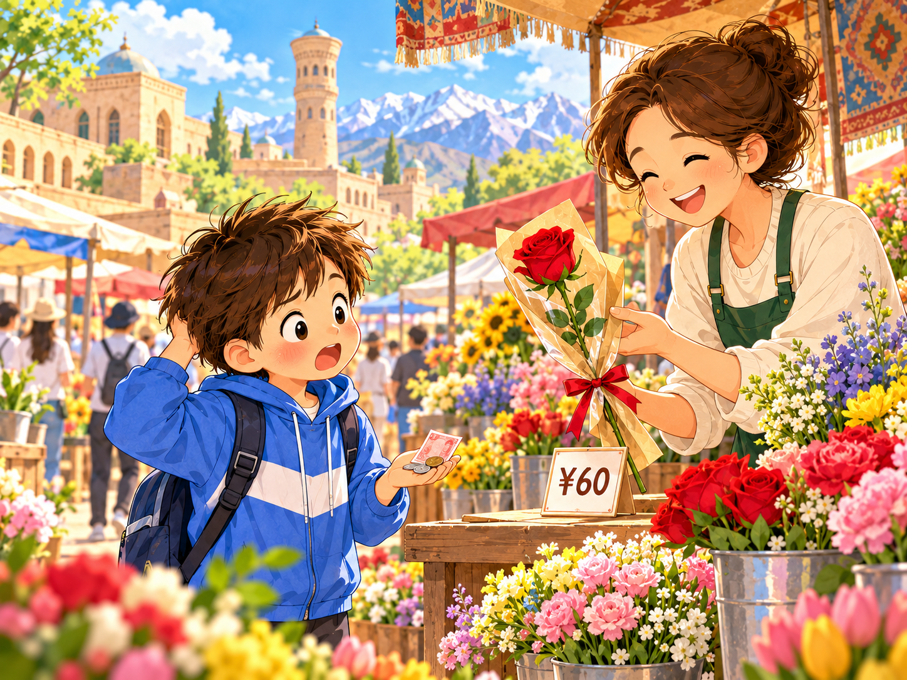
Look! The price in Xinjiang is sixty yuan.
Too expensive! Why?
看！新疆的价格是六十元。太贵了！为什么？（生词：price 价格 · expensive 昂贵的）
同一种花，越远越贵。差额藏在了运输、损耗和花店成本里。
The flowers go by truck.
They go by plane.
It is a long, long way.
鲜花坐货车，坐飞机，走很远很远的路。（复习：flower）
从云南到新疆有 3000 多公里，路费是价格的一部分。
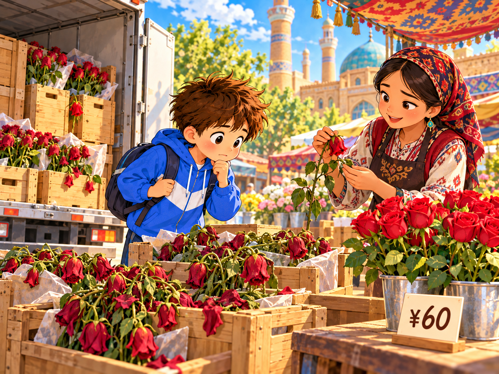
Some flowers are sad on the way.
So the price goes up.
有些花在路上蔫掉了，剩下的花就要分担它的路费，所以价格变高了。
鲜花会损耗，越远损耗越大——这也是差价的一部分。
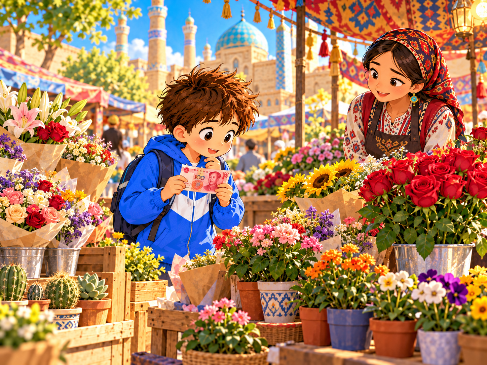
I have 100 yuan.
It is my money.
What can I buy? Let me see!
我有 100 元，这是我的钱。我能买什么呢？让我想想！（生词：money 钱）
翻开研学手册的任务二，用真实价格设计你的采购单吧！
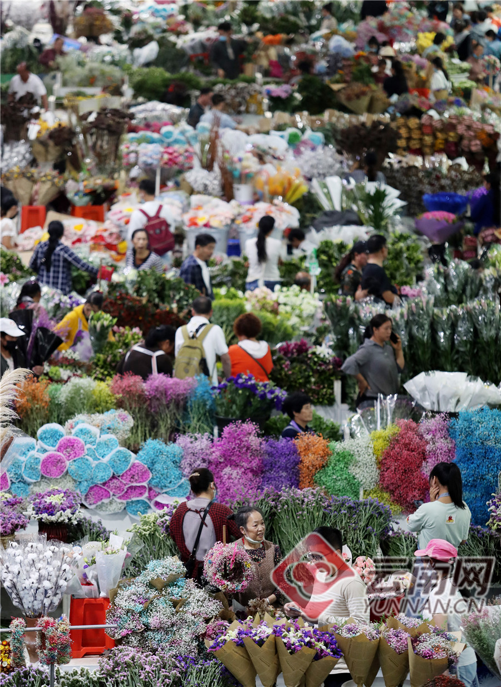
I love the flower market.
Flowers go far. Love goes far, too.
我爱斗南花市。花会去很远的地方，爱也会去很远的地方。
图片：斗南花市鲜花特写（来源：云南网）
1. What flowers can you see in the market?
在花市里你能看到哪些花？
2. How much is a rose in Dounan? How much in Xinjiang?
斗南的玫瑰多少钱？新疆的多少钱？
3. Why is it cheap in Dounan?
为什么在斗南买花最便宜？（和爸爸妈妈说一说）
I read the whole book!
我能自己读：5页 10页 全部12页
我最喜欢的句子：
家长签名：
下一站：把它读给爷爷奶奶听吧！